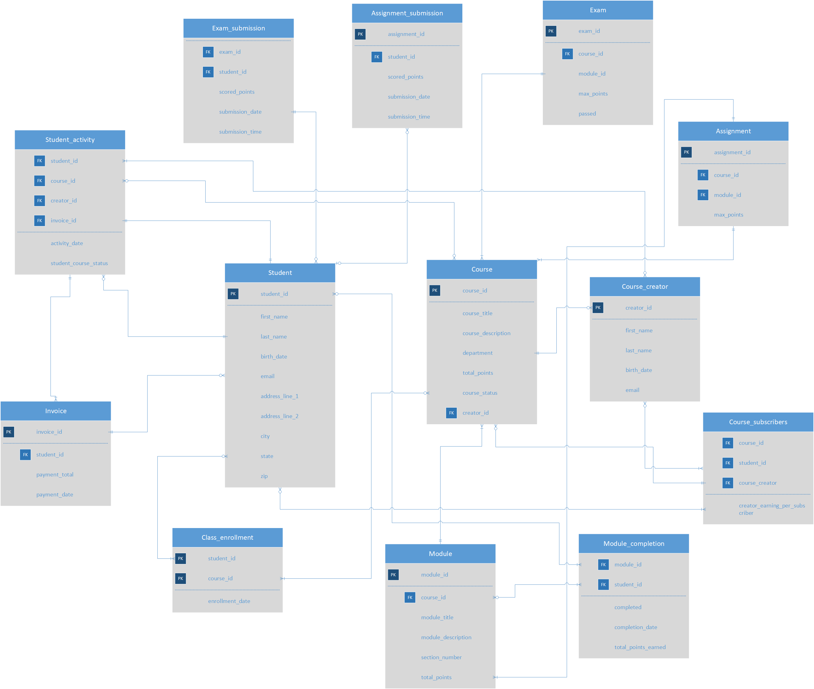

Kepler EdTech Platform
Relational Database Design
A fully normalized 3NF relational schema for a subscription-based EdTech platform — translating complex business rules (revenue splits, enrollment caps, creator payouts) directly into database architecture and T-SQL logic.
Kepler is a subscription-based EdTech platform built for independent content creators. This project documents the full lifecycle of database design: translating a set of complex, non-trivial business requirements into a normalized relational schema, then implementing that logic in T-SQL with production-grade constraints and financial reporting queries.
The work demonstrates something beyond query authorship — the ability to design how data is stored before writing a single line of SQL. Schema decisions made at the ERD stage have cascading consequences for query complexity, data integrity, and system scalability. The choices documented here — normalization level, composite key placement, foreign key enforcement, junction table strategy — reflect deliberate architectural thinking rather than ad-hoc table creation.
The schema was optimized for data integrity over query convenience. Enforcing the 3-course enrollment cap and revenue logic at the database level — rather than in application code — means these rules hold regardless of which system or user accesses the data. Constraints belong in the schema; business logic belongs in the schema; application code should trust the database.
Before modeling a single table, the business requirements were mapped into explicit constraints and data relationships. Each requirement below corresponds to a deliberate architectural decision in the schema.
Fixed $20 subscription fee. Instructors receive $5 per active enrolled student; platform retains the remainder. Must be calculable from stored activity data.
"Active" status is conditional — requires both concurrent subscription payment and enrollment activity. Status must reflect real-time compound conditions.
Students may not enroll in more than 3 courses simultaneously. This constraint must be enforced at the data layer, not just application logic.
Student progress must be tracked across three separate layers: assignments, exams, and module completions — each with their own scoring and completion states.
Payouts are calculated on the 5th of each month for the prior month's active enrollment. Query must be reproducible, parameterized, and auditable.
Students enroll in multiple courses; creators publish multiple courses. These relationships require proper junction table architecture with composite keys.
Normalization is not a formality — it is the process of eliminating the structural conditions that cause data anomalies. A schema that is not normalized will eventually produce incorrect data through insertion, update, or deletion operations, often silently. The Kepler schema was designed to Third Normal Form (3NF), the standard for production relational databases.
Every column holds a single, indivisible value. No repeating groups, no comma-separated lists inside a cell. Example: storing course_id as a separate row per enrollment rather than a concatenated string like "course_1,course_2" in the student record.
All non-key attributes depend on the entire primary key, not just part of it. Critical for composite-key tables like Class_enrollment: attributes like enrollment_date depend on the full (student_id, course_id) pair, not on either key alone.
Non-key columns depend directly on the primary key, not on other non-key columns. Example: instructor_name must not live in the Course table — it belongs in CourseCreator and is accessed via creator_id. Storing it in both tables creates update anomaly risk and is a 3NF violation.
Kepler's revenue logic depends on accurate active enrollment counts. A denormalized schema — where student-course relationships were stored as repeated values inside a single row — would make it impossible to correctly COUNT active students per course without complex parsing logic. Normalization made the revenue query straightforward because the data shape matches the question being asked.
The schema is organized into three logical domains: Users (Students and CourseCreators), Content (Courses, Modules, Assignments, Exams), and Activity (enrollment, submissions, completions). Junction tables with composite primary keys manage the many-to-many relationships between these domains.

Key Architectural Decisions
| Decision | Tables Affected | Reasoning |
|---|---|---|
| Composite Primary Keys | Class_enrollment, Assignment_submission, Exam_submission, Module_completion |
Junction tables need a compound key to enforce uniqueness on the relationship itself — a student can only have one enrollment record per course, one submission per assignment. |
| BIT columns for Boolean state | Student.subscription_status, Class_enrollment.is_active, Assignment_submission.passed, Module_completion.completed |
BIT enforces binary states at the type level. Using VARCHAR("Yes"/"No") would allow invalid values and require application-level validation. BIT moves constraint enforcement into the schema. |
| enrollment_count in Student | Student |
Denormalized count cached to support the 3-course cap constraint check without requiring a COUNT query on every INSERT. Updated via trigger or stored procedure on enrollment change. |
| Separating Course, Module, Assignment | Content domain | Each content type has distinct attributes and relationships. Collapsing them into a single table would require nullable columns and make queries ambiguous. Separation enables clean joins and allows new content types to be added without schema refactoring. |
| Student_Activity as activity log | Student_Activity |
Maintains a timestamped record of status per student-course combination per period. This is the source of truth for monthly revenue calculations and historical reporting — not a live state table. |
The subscription fee structure creates a three-way financial relationship between the student, the creator, and the platform. This logic needed to be implemented so that any query against Student_Activity could derive correct revenue figures without relying on hardcoded application values.
to course creator
per student
The cap matters financially: With a 3-course maximum, the minimum platform revenue per student is $5 (3 courses × $5 = $15 paid out, $5 retained). A student enrolled in 1 course generates $15 for the platform. The revenue query below identifies platform-favorable enrollment patterns.
A — Strategic Revenue Analysis
Identifies students enrolled in ≤1 course — where platform net revenue exceeds $5 — by month
SELECT student_id, DATENAME(month, activity_date) AS active_month, (20 - (COUNT(course_id) * 5)) AS platform_net_revenue FROM Online_Courses.db_datawriter.Student_Activity GROUP BY student_id, DATENAME(month, activity_date) HAVING (20 - (COUNT(course_id) * 5)) > 5; -- Returns students generating >$5 for the platform -- i.e., those enrolled in fewer than 3 active courses
C — Monthly Creator Payout Report
Parameterized query calculating $5-per-active-student payout per creator for a given month
/* Requirement: Creators receive payout on the 5th for the previous month. Logic: Count 'Active' status records per creator per course, multiply by $5. */ DECLARE @PayoutMonth INT = 1; -- January DECLARE @PayoutYear INT = 2026; SELECT CC.CreatorID, CC.FirstName + ' ' + CC.LastName AS CreatorName, C.CourseTitle, COUNT(SA.StudentID) AS ActiveStudentCount, COUNT(SA.StudentID) * 5.00 AS TotalPayoutAmount FROM CourseCreator CC JOIN Course C ON CC.CreatorID = C.CreatorID JOIN StudentActivity SA ON C.CourseID = SA.CourseID WHERE SA.StudentCourseStatus = 'Active' AND MONTH(SA.ActivityDate) = @PayoutMonth AND YEAR(SA.ActivityDate) = @PayoutYear GROUP BY CC.CreatorID, CC.FirstName, CC.LastName, C.CourseTitle ORDER BY TotalPayoutAmount DESC;
Using DECLARE variables instead of hardcoded month/year values makes this query reusable for any payout cycle without code modification. This is the foundational pattern for Stored Procedures — the next phase would wrap this in a CREATE PROCEDURE block and call it via a SQL Server Agent job on the 5th of each month.
The project deliberately emphasizes set-based logic over procedural loops. SQL is a set-based language — queries that operate on result sets outperform row-by-row cursor operations by orders of magnitude at scale. The Virtual Gradebook below is an example of aggregating across three separate submission tables in a single pass using INNER JOIN chains.
B — Virtual Gradebook View
SQL View aggregating cumulative student scores across assignments, exams, and module completions
CREATE VIEW db_datawriter.v_StudentGrades AS ( SELECT a.student_id, mo.course_id, ( SUM(a.scored_points) + SUM(e.scored_points) + SUM(m.total_points_earned) ) AS cumulative_score FROM Online_Courses.db_datawriter.Assignment_submission a INNER JOIN Online_Courses.db_datawriter.Exam_submission e ON a.student_id = e.student_id INNER JOIN Online_Courses.db_datawriter.Module_completion m ON e.student_id = m.student_id INNER JOIN Online_Courses.db_datawriter.Module mo ON mo.module_id = m.module_id GROUP BY a.student_id, mo.course_id );
Why a View — Not a Table?
The gradebook is implemented as a SQL View (a stored query) rather than a materialized table for two reasons. First, grades are derived values — they should always reflect current submission data, not a snapshot that can fall out of sync. Second, a View acts as a security boundary: downstream users or applications can query v_StudentGrades without direct access to the underlying submission tables, limiting exposure of raw assessment data.
| Pattern Used | Technique | Benefit |
|---|---|---|
| Set-based aggregation | Single query with three INNER JOIN chains and SUM() |
One pass through the data vs. iterative cursor loops — scales to millions of rows |
| SQL View abstraction | CREATE VIEW over raw tables |
Always-current derived data; access control boundary; simplifies downstream queries |
| Parameterized reporting | DECLARE variables in payout query |
Reusable without code changes; Stored Procedure-ready pattern |
| Constraint-first design | FOREIGN KEY, BIT types, composite PKs |
Business rules enforced at data layer — cannot be bypassed by application code |
The modular schema design enables Kepler to extend its content offerings and automate financial operations without refactoring the core architecture. The separation of Course, Module, and Assessment into distinct tables is the foundation for both extensibility and performance optimization.
Wrap the creator payout query in a CREATE PROCEDURE block and schedule it via SQL Server Agent to execute automatically on the 5th of each month — eliminating manual reporting and creating an auditable execution log.
Adding live workshops, peer-reviewed projects, or cohort sessions requires only new tables (e.g., Workshop, PeerReview) with foreign keys back to Course. The core schema is untouched — this is the payoff of proper normalization.
As Student_Activity grows, non-clustered indexes on (course_id, activity_date, student_course_status) would dramatically reduce the monthly payout query's I/O cost by enabling index seeks instead of full table scans.
Implement an AFTER INSERT trigger on Class_enrollment that checks enrollment_count against the 3-course limit and raises an error if exceeded — moving the business rule fully into the database engine.